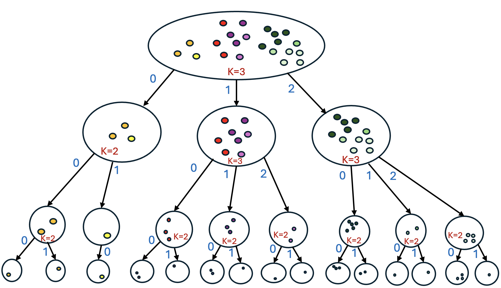
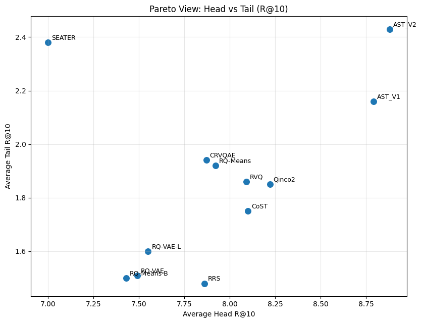
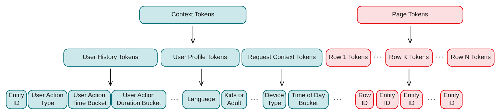
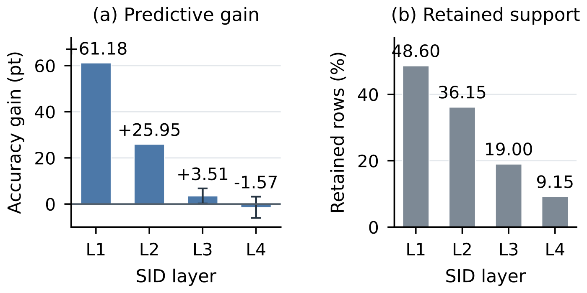

目录 · 8 节
1SID 后三个 token 相同的两件商品，真的相近吗？2一件商品从标题描述到被推荐出来，要经过哪几步？3每组商品到底该分几份？4embedding 上分得好的一组商品如果没人买，模型怎么学？5同一个模型、同一份 embedding，只换编号能差多少？6涨幅是不是靠牺牲冷门商品换来的？7自适应份数和交互量要求各贡献了多少？8换一家商品库，这套造法还要调什么？给商品造推荐用的编号时，后面几位只有跟在前面几位之后才有意义，这篇论文干脆把商品逐层分组建成树，用树上的路径当编号，推荐模型不变，Recall 和 NDCG 比最强的对照方法平均高约 13%。
生成式推荐不给每件商品单独打分。推荐模型读完用户的历史，一个 token 接一个 token 地写出下一件商品的编号，这个编号叫 Semantic ID（SID）。全文用一家示意的美妆店来讲：店里有 36 件商品，分唇妆、护肤、香水三类。某位用户刚买了一支哑光口红，模型要写出下一件商品的 SID，比如 <c0_0><c1_1><c2_0>，系统再查 SID 和商品的对应表，把这串 token 还原成商品。
商品本来没有 SID，需要在训练推荐模型之前用一个单独的步骤给每件商品造好，推荐模型之后只能照着这些 SID 学。如果 SID 的第一个 token 对应大类，模型写第一个 token 就相当于给唇妆、护肤、香水三类各算一个概率，写第二个 token 再在选中的大类里细分。难处就在这里：如果两支很像的口红拿到了开头完全不同的 SID，用户买完哑光口红之后，这两支口红都可能是下一件，模型写第一个 token 时就得同时给两个不同的取值分概率，没法集中到一个取值上。
目前最常见的造法是残差量化，TIGER 用的 RQ-VAE 是代表。RQ-VAE 拿到商品的 embedding 后，先在第一本码本（一张存着若干中心向量的表）里给商品找最近的中心，把中心的序号记成第一个 token。然后 RQ-VAE 用商品 embedding 减去这个中心，把剩下的差值（残差）拿到第二本码本里再找一次最近的中心。第二本码本全店共用，不管第一个 token 是几，都查同一本。
示意：哑光口红的 embedding 是 (1.0, 0.2)，减去中心 (1.0, 0) 后，残差是 (0, 0.2)。木质香水的 embedding 是 (0, 1.2)，减去中心 (0, 1.0) 后，残差也是 (0, 0.2)。两件商品的残差相同，在第二本码本里找到的最近中心也相同，于是拿到相同的第二个 token，可口红和香水在原来的 embedding 空间里隔得很远。
也有方法直接按树来编号，比如 SEATER（按层级造 SID，再用对比学习修正的树方法），但按树编号的这类方法，每组商品分成几份（分支数）通常事先定好。放到这家店里（示意），香水只有 8 件，味道只分花香和木质两类，分 2 份就够。如果规定每组都分 4 份，香水也得切成 4 份，同是花香的商品就会落到不同的份里。这篇论文要改的就是上面两个缺口。针对第二个 token 相同、商品却不相近的问题，它让 SID 的每个 token 都表示树上的一次分组选择。针对份数定死的问题，它让每组商品分几份，由这组商品在 embedding 空间里聚成几团决定。
SID 后三个 token 相同的两件商品，真的相近吗？
作者先检验一个假设：如果 SID 的每个位置各有独立的含义（比如第二个 token 不管跟在什么后面都表示同一种属性），后三个 token 都相同的两件商品就应该很像。作者用 TIGER 的 RQ-VAE 给 Beauty 数据集的商品生成 4 个 token 的 SID，再按下表的相同模式挑出商品对，算每种模式下两件商品的平均余弦相似度。挑法用 0 和 1 写，1100 表示两件商品的前两个 token 相同、后两个 token 不同。
| 两个 SID 逐位比较的相同模式 | 平均余弦相似度 | 同一次分析里随机商品对的平均余弦相似度 |
|---|---|---|
| 1000：只有第一个 token 相同 | 0.758 | 0.554 |
| 1100：前两个 token 相同 | 0.874 | 0.554 |
| 1110：前三个 token 相同 | 0.920 | 0.554 |
| 1000：只有第一个 token 相同 | 0.740 | 0.570 |
| 0111：第一个 token 不同，后三个相同 | 0.582 | 0.570 |
表的前三行和后两行来自两次分析，各自抽样估计平均值，估计结果不完全一样，所以 1000 这一种模式有 0.758 和 0.740 两个值。读表时，每一行只和同一次分析的随机商品对比。
前三行说明，SID 开头连续相同的 token（前缀）越长，两件商品越像，相似度从 0.758 一路升到 0.920。后两行说明，只共享第一个 token 的商品对有 0.740，后三个 token 全相同、第一个 token 不同的商品对只有 0.582，几乎等于随机商品对的 0.570。前面美妆店里的口红和香水第一个 token 不同、第二个 token 相同，商品却隔得很远，和 0111 这一行是同一类情况。
第一个 token 不同时，后面的 token 再相同，也几乎说明不了两件商品像不像，后面 token 的含义要看前面的 token 是什么。
这组测量只做了 Beauty 数据集和 RQ-VAE 这一种造法。前缀越长商品越像，说明 SID 逐个 token 在把商品越分越细，像沿着一棵树往下走。作者由此得出的做法很直接：先把商品逐层分组建成树，再把每件商品从树顶走到自己所在小组的路径读成 SID。他们把这个方法叫 AST（Adaptive Silhouette Tree，从全店开始一层层把商品分组，每组自己挑分几份）。
一件商品从标题描述到被推荐出来，要经过哪几步？
| 步骤 | 输入 | 操作 | 产出 | 发生在 |
|---|---|---|---|---|
| 1 | 商品的标题、类目、描述 | 拼成一段文本，用 Qwen3-Embedding-0.6B 编码并归一化 | 每件商品一个 embedding | 造 SID 时 |
| 2 | 一组商品的 embedding | 试几种分组份数，每种都用 KMeans 分组并打分（打分方法见下一节），挑打分最高的切法 | 这组商品被分成几份 | 造 SID 时 |
| 3 | 分出来的每一份 | 重复第 2 步，直到除最后一位外的 token 都定下来，或这一组没有符合要求的分法 | 每件商品除最后一位外的 token | 造 SID 时 |
| 4 | 树最底层一个小组里的商品 | 按商品编号排名，名次写成最后一个 token | 每件商品完整的 SID | 造 SID 时 |
| 5 | 用户历史的 SID 序列，下一件商品的 SID | T5 encoder–decoder 学习根据历史写出下一个 SID | 训练好的推荐模型 | 训练时 |
| 6 | 待推荐用户的历史 | 模型逐个 token 写 SID，beam search 保留得分高的几条 | 几个 SID，查表得到商品 | 推理时 |

放回美妆店，看一支哑光口红 A 怎么拿到 SID（示意）。全店分三组，A 进 0 号组（唇妆），第一个 token 是 <c0_0>（c0 表示第一个位置，后面的 0 是组号）。唇妆组再分，A 进 1 号组（哑光），第二个 token 是 <c1_1>。哑光组有 3 件口红，按商品编号排 A 排第三，从 0 数起是 2，最后一个 token 是 <c2_2>。
所以 A 的 SID 是 <c0_0><c1_1><c2_2>，一支木质香水的 SID 可能是 <c0_2><c1_1><c2_0>（2 号组是香水，香水下的 1 号组是木质）。两个 SID 的第二个 token 都是 <c1_1>，它跟在唇妆后面表示哑光，跟在香水后面表示木质。一条训练样本的输入是用户的历史 SID 序列，比如只有 A 这一条，目标是同组另一支口红的 SID <c0_0><c1_1><c2_0>。
不加交互量要求的 AST，把「靠得近」直接写进了 SID 的结构。同一条前缀下的商品，就是某次 KMeans 在原始 embedding 空间里分出来的一组，KMeans 按距离分组，所以两件商品共享前缀，就说明它们靠得近。后面的约束版会为满足交互量要求挪动商品，组内商品不一定都这么近。RQ-VAE 里第一个 token 不同、第二个 token 相同的两件商品，原始 embedding 可以隔得很远，前面的口红和香水就是这样。
作者还指出残差量化的一笔浪费。示意店铺的 SID 有 3 个 token，每个 token 4 种取值，残差量化能组合出 64 种序列，只有 36 种对应真实商品。beam search 每步只保留得分最高的几条序列，这些名额可能花在另外 28 种上。论文用同样的算法（1 减去商品数除以全部组合数）估计，没有对应商品的序列占比可能超过 99.9%。AST 只对店里实际存在的商品分组，空的组直接丢弃，所以树上每条路径都落到真实商品，合法的 SID 就是分给真实商品的那些。这笔账只数了编号结构里有多少空位，不涉及模型解码时怎样避开树外的 token 组合，也不等于 Recall 的涨幅。
每组商品到底该分几份？
AST 在每一组商品上都要回答这个问题。份数的上限是 B，也就是 SID 每个位置最多有几种取值。下限来自容量：这一组商品如果分得太少，每一份就装不下，后面的 token 区分不开这么多商品。
示意：B=4，SID 前两个 token 走树，最后一个 token 排序号。第一层分出的每一份，下面最多再分 4 组，每组最多 4 件，所以一份最多装 16 件。全店 36 件，36÷16 向上取整是 3，于是全店至少分 3 份，最多分 4 份。
AST 在这个范围里把每个候选份数都跑一次 KMeans，再用轮廓系数打分。轮廓系数给每件商品算一个分：a 是它到同组其他商品的平均 embedding 距离，b 是它到最近的另一组商品的平均 embedding 距离，分数是 (b−a)/max(a,b)。
示意：一支木质香水的 a 是 0.2，b 是 0.5，分数是 0.3÷0.5=0.6。分数接近 1，说明这件商品和同组商品很近、和别组很远；接近 0，说明它夹在两组之间。把全组商品的分数平均，就是这种切法的得分。全店分 3 份平均得 0.42，分 4 份得 0.35，AST 选 3 份，得到唇妆 12 件、护肤 16 件、香水 8 件。
三组继续往下分时，范围各不相同（示意，仍按每组最多装 4 件算）。香水 8 件，8÷4=2，可以分 2 到 4 份，AST 按轮廓系数选了 2 份。唇妆 12 件，至少分 3 份。护肤 16 件，16÷4=4，最少份数已经等于上限 4，只能分 4 份。同一棵树上，三组分出的份数就可以是 2、3、4。
为什么不调一个最好的固定份数，所有组都用它？作者给的理由是，固定份数的树只是份数可变的树的一个特例。最底层小组的总数相同时，份数可变的树里最好的那棵，各组内部的 embedding 差异之和，不会比固定份数的树里最好的那棵大。这个结论比的是两棵最优的树。AST 每次只在当前这一组里比较几种份数，选完不回头改上一层，所以选出来的树不保证是全局最优的那棵。后面的消融实验拿调到最好的固定份数和 AST 逐组选出的份数比，量的就是这种选择的实际效果。
轮廓系数还有一个盲区：它只看 embedding 里的距离，看不到谁买得多。示意：两款水润口红的 embedding 很靠近，KMeans 把它们单独分成一组，轮廓系数只看距离，给这种切法打了高分，可这两款全年只卖出几次。
embedding 上分得好的一组商品如果没人买，模型怎么学？
上面那组水润口红的前缀，在训练序列里几乎不出现。作者认为，推荐模型在训练序列里见到这条前缀的次数太少，就估不准这条前缀的概率，生成时走到这里质量就差。于是他们给每一份加了一条要求：分出来的每一份商品，累计交互次数至少要占被切分的这一组累计交互次数的比例 ρ（下面的示意用购买次数）。
示意：ρ=0.1，唇妆组一共被买 100 次，KMeans 分成三份，哑光这份被买 80 次、水润 15 次、唇釉 5 次。唇釉这一份不够 10 次，还差 5 次，要从别的份里划商品过来。
随便挪几件也能凑够 10 次，可那样会破坏 KMeans 已经分好的结构，所以作者要挑代价最小的挪法。示意：距离代价指商品到所属这一份中心的距离平方，挪一件买了 5 次的商品，距离代价增加 0.10；挪两件分别买了 3 次和 2 次的商品，距离代价合计只增加 0.06。MILP（混合整数线性规划，这里的整数变量就是每件商品归哪一份）在所有满足要求的挪法里找总距离代价最小的，也就是后一种。
ρ 还顺带限制了份数：每一份至少占 ρ，全部份加起来只有 1，所以份数不能超过 1/ρ 向下取整，ρ=0.1 时最多 10 份。如果这个上限比前面按容量算出的最少份数还小，这一组就没有可行的切法，分组在这里停止。前面的容量推算只对能一直分下去的组成立，这种提前停下的组不在它的范围内。 Hoot 说

- 容量一侧（示意）：第 2 层节点的每个孩子往下最多容纳 32×32=1,024 件。分 4 支只能装 4,096 件，分 5 支能装 5,120 件，所以 5,000 件至少要 5 支。
- mass 一侧（示意）：节点内 mass 总和是 1。每支至少 0.25 时，5 支共需 1.25，超过了总量，所以最多 4 支。卡住分配的是这笔总账，和商品在 embedding 里离得多近无关。
- 停下之后：SID 长度是 m=L+1=4，这个节点只走完 1 位，还差 3 位。32 个末位编号分不开 5,000 件商品，而论文只写到递归在这里停止。
- mass 用在哪三处，要分开看：AST-V1 的 MILP 里，mass 只出现在约束中，距离目标不加权，中心固定，silhouette 也不加权。AST-V2 给 silhouette 和中心更新加了权，分配步仍用同一个 MILP，目标依旧不加权。论文又说全流程最小化的是带 π 的 W_π，这与 Eq. 1 的目标并不一致。
数字都是示意，和正文的美妆店无关：B=32、L=3、5,000 件商品和 ρ=0.25 都只为手算方便。ρ 越小，分支数上限越松，这种冲突越不容易出现。
出处
论文 §4.2.1 分支数上下界；§4.2 Leaf Refinement；§4.4.1 mass 约束与空区间时递归停止；§4.4.2 Eq. 1–4 的 MILP；§4.4.3 加权 silhouette、加权中心与 W_π 的陈述。B、L、ρ、n 的取值为示意。作者做了两个版本。AST-V1 只修补：KMeans 的结果满足要求就不动，不满足才用 MILP 挪商品，中心保持不变，打分仍用普通的轮廓系数。AST-V2 把交互量放进打分和中心计算。
AST-V2 的打分按交互量加权。示意：两件商品的轮廓分是 0.6 和 0.2，交互量占比是 0.75 和 0.25，加权得分 0.5，普通平均是 0.4。卖得多的商品分得好不好，对这种切法的得分影响更大。
AST-V2 的中心也按交互量加权，算完新中心再用 MILP 重新分配商品，交替几轮。作者称，这个过程最小化的是按交互量加权的距离代价（每件商品的距离平方乘以它在本组的交互占比，再全部加起来），交替时这个代价不会上升。示意：一份里有两件商品，位置在 0 和 1，分别被买 3 次和 1 次，中心从普通平均的 0.5 移到 0.25，买得多的商品离中心更近。作者的想法是，经常出现在训练序列里的商品，离所属这一份的中心应该更近、表示得更准，这样造 SID 时重视的商品和推荐模型训练时见得最多的商品是同一批。
同一个模型、同一份 embedding，只换编号能差多少？
作者在 5 个 Amazon Review 数据集上比较，商品数从 11,924 到 28,237。每个用户的最后一次交互用来测试，倒数第二次用来验证，其余用来训练。所有造法都用同一份 Qwen3-Embedding-0.6B，后面都接同一个 T5 encoder–decoder，变量只剩 SID 的造法。对照一共 10 种，覆盖残差量化、聚类和树方法，下表里的 RQ-Means（在残差上跑 K-means）、RVQ（标准残差量化）、CoST（用对比学习替换重建目标）都属于残差量化这一路。
| 数据集 | 商品数 | 该数据集最强对照的 Recall@10（%） | AST-V2 的 Recall@10（%） |
|---|---|---|---|
| Beauty | 12,101 | RQ-Means 6.98 | 7.51 |
| Toys | 11,924 | RVQ 7.07 | 7.94 |
| Sports | 18,357 | RVQ 4.09 | 4.62 |
| Health | 18,534 | CoST 6.30 | 6.64 |
| Home | 28,237 | CoST 2.63 | 3.02 |
五个数据集平均，AST-V2 的 Recall@10（下面简写 R@10）是 5.95。论文的 13.55% 是和五个数据集平均成绩最高的单个对照方法比的，按论文表格算，R@10 上这个方法是 RVQ，平均约 5.24，所以这个比例和上表逐行的最强对照不是同一个口径。Recall 和 NDCG 各取 @5 和 @10，四个指标合起来平均提升 13.08%。这说明只换 SID 的造法就能拉开差距，因为 embedding 和推荐模型在所有方法里都一样。这里的 13% 是相对提升，AST-V2 的 R@10 绝对值在 3% 到 8% 之间。
每个数据集、每个指标的最好成绩，都由 AST 的某个版本拿到。AST-V2 在所有数据集和指标的组合里，只有一项没拿到第一或并列第一：Sports 的 NDCG@10 上，它的 2.51 略低于 AST-V1 的 2.54。这说明平均领先不是靠一两个数据集撑起来的。
涨幅是不是靠牺牲冷门商品换来的？
交互量要求会把商品挪到交互少的份里，好让冷门前缀有训练样本，这就带来一个问题：冷门商品变好时，热门商品是不是变差了？作者把商品按热度排序，合计覆盖约 80% 交互的最热门商品算头部，其余算尾部，再分开看 R@10 和 NDCG@10。

AST-V2 的头部 R@10 和 NDCG@10 平均都是第一，尾部 R@10 也是第一，尾部 NDCG@10 排第二。对照里 SEATER 在尾部商品上强、在头部商品上弱，RRS（在残差候选里递归搜索，直到每件商品的 SID 不重复）偏向头部商品。这说明 AST-V2 的提升没有靠牺牲一头去换另一头。用美妆店打比方，卖得多的哑光口红和卖得少的水润口红都要能推得出来，AST-V2 的平均成绩在这两类商品上都排在前两名。
自适应份数和交互量要求各贡献了多少？
作者做了两种简化。第一种把 ρ 设成 0，去掉交互量要求。第二种去掉份数自适应，所有组都用同一个固定份数，而且每个数据集都把这个份数调到最好，所以下表「固定份数」这一列已经是固定份数能拿到的最好成绩。
| 数据集 | 完整 AST（即 AST-V2） | 去掉交互量要求 | 固定份数（调到最好） |
|---|---|---|---|
| Beauty | 7.51 | 7.33 | 7.01 |
| Toys | 7.94 | 7.73 | 7.36 |
| Sports | 4.62 | 4.54 | 4.56 |
| Health | 6.64 | 6.40 | 6.48 |
| Home | 3.02 | 2.98 | 2.95 |
表里的数字都是 R@10（%）。完整版在五个数据集上都最高，这说明两个部件都有用，而且哪个更关键随数据集变化。Beauty 和 Toys 上，换成固定份数掉得更多，比如 Beauty 从 7.51 掉到 7.01。Sports 和 Health 上，去掉交互量要求掉得更多，比如 Health 从 6.64 掉到 6.40。
最大的 Home 上，两种简化都只掉一点，从 3.02 到 2.98 和 2.95。作者的解读是，大数据集的交互多，树上的各条前缀本来就有足够的训练样本，而交互量要求和份数自适应在训练样本稀缺时才更有价值，所以差距变小。
两种简化版的 R@10 仍都高于上一张表里的最强对照，比如 Beauty 的固定份数版 7.01 对 6.98，Home 的固定份数版 2.95 对 2.63。这说明拿掉其中一个部件，按树路径造 SID 的做法在这些数据集上依然领先。作者把这归功于「SID 是树上的路径」这个基本结构，而这组消融没有拿掉树本身，所以拆不出树结构单独贡献多少。
换一家商品库，这套造法还要调什么？
ρ 需要按数据集调。作者把 ρ 从 0.001 试到 0.05，中等大小的 ρ 在有些数据集上提高 R@10，在另一些数据集上降低。作者的解释是，要满足交互量要求，就可能把不太相像的商品凑进同一份，组内商品的相似度随之下降。SID 长度从 2 试到 7，Beauty 最好的长度是 4，其余四个数据集是 5，这说明 SID 长度和 ρ 一样要按数据集选。
embedding 的选择对 AST 影响不大。换成 M3、Qwen3 0.6B、Qwen3 4B 三种 embedding 模型，AST 在 Beauty 上的 R@10 只在 7.38 到 7.51 之间变化。AST 在每种 embedding 下都高于主实验里在该数据集上排第二、第三的方法。这说明在这三种 embedding 上，它的领先不依赖其中某一种。
新商品上架时，AST 直接把它放进现有的树。示意：一款新的木质香水，先算出它的 embedding，和全店三组的中心比距离，最近的是香水组；再和香水组两份的中心比距离，最近的是木质那一份。每层最多比 4 次，两层最多比 8 次，比较次数和店里有多少商品无关。放进树里只解决编号问题，推荐模型并没有针对这条新 SID 训练过，所以冷启动还有模型这一侧的缺口。
作者自己列的短板有两条：SID 的质量受 embedding 质量影响，embedding 噪声大时推荐也会变差；MILP 求解到百万级商品时计算开销可能很大，作者认为那时需要更高效的聚类和优化方法。所有结果都来自 5 个亚马逊数据集，最大的 Home 有 28,237 件商品。
回到那家美妆店，AST 改动的只有 SID 这张表：模型写第二个 token 时，「哑光」只在唇妆之后才有这个含义，香水也不用被硬切成 4 份。造 SID 时按模型写 token 的顺序把树建好，同一个 T5 在这五个数据集上就比最强对照平均高约 13%。
读完这篇，你觉得
夜读鸮记下了，谢谢你的反馈。
点一下即可，无需登录；再点一次撤回。只统计匿名次数，不记录你是谁。
相关论文RELATED

Generative · 2026-10-24GenPage: Towards End-to-End Generative Homepage Construction at NetflixNetflix 首页原来由多阶段推荐系统拼出来，先召回候选行和候选影片、再分别排序、最后组页，GenPage 改用一个 decoder-only Transformer 直接生成整页。首页由多行组成，每行是一个主题。用户历史、账号属性和请求信息编码成 prompt，模型按从左到右、从上到下的顺序逐个生成行 token 和影片 token。训练照搬大模型的流程，先在线上获得正反馈的首页上做下一 token 预测预训练，再用加权二分类或强化学习做后训练：前者给每个曝光的行或影片按用户反馈的正负定标签、按奖励大小定权重，后者按整页曝光影片的奖励之和来优化。它在 14 天 A/B 中把 Netflix 用来决定新算法能否上线的核心用户互动指标提升 0.24%，端到端延迟降低 20%。
Generative · 2026-11-05ReuseGR: Offline--Online Decoupled Generative Retrieval via Adaptive Prefix Reuse做生成式检索上线的团队值得读：它给出了一种拆法，大模型的算力按搜索词复用，个性化留给在线小模型，并且有线上 A/B 验证。同一个搜索词每天被很多人搜，每次都从头生成完整的 Semantic ID 是在重复计算。ReuseGR 把活拆成两半：离线用大模型给每个搜索词先生成一批 SID 前缀，同词的请求共用；在线用小模型按当前用户的历史挑前缀，再补全剩下的 token。在一个搜索广告数据集上，假设前缀已提前缓存好，它的召回和全程在线跑大模型持平，在线延迟却低 57.7%；线上 A/B 里，点击率比原来的小模型方案相对提高 0.93%。 Generative · 2026-11-04Think Globally, Generate Personally: Multi-View Thinking with Adaptive Generation for Generative Recommendation做 SID 生成式推荐时，用户最近冒出来的新兴趣常被大量老行为盖住，所有用户也共用同一套输出变换。论文在 TIGER 这类模型上补这两处。生成之前，模型额外加两个专门的思考 token，一个只读用户的全部历史，一个只读最近几件物品。读出的两个向量排在解码器输入开头，生成每个码时都能参考。生成的时候，解码器输出的向量先过一组深浅不同的小适配模块，每个用户只走其中一条：看哪条路径在第一个 SID 位置给出的最高概率最大，就选哪条，不看深浅。在 Amazon Instruments 上，把所有测试用户的前 20 个推荐合在一起，出现过的不同 SID 占全部 SID 的比例从 TIGER 的 19.56% 提到 25.50%，命中率也更高。代价是三段式训练更繁琐，公开数据的历史也比线上短得多。
Generative · 2026-11-04Think Globally, Generate Personally: Multi-View Thinking with Adaptive Generation for Generative Recommendation做 SID 生成式推荐时，用户最近冒出来的新兴趣常被大量老行为盖住，所有用户也共用同一套输出变换。论文在 TIGER 这类模型上补这两处。生成之前，模型额外加两个专门的思考 token，一个只读用户的全部历史，一个只读最近几件物品。读出的两个向量排在解码器输入开头，生成每个码时都能参考。生成的时候，解码器输出的向量先过一组深浅不同的小适配模块，每个用户只走其中一条：看哪条路径在第一个 SID 位置给出的最高概率最大，就选哪条，不看深浅。在 Amazon Instruments 上，把所有测试用户的前 20 个推荐合在一起，出现过的不同 SID 占全部 SID 的比例从 TIGER 的 19.56% 提到 25.50%，命中率也更高。代价是三段式训练更繁琐，公开数据的历史也比线上短得多。 Generative · 2026-11-02RoFiGR: Coarse Routing, Fine Refinement via Level-Adaptive Distillation in Multimodal Generative Recommendation生成式推荐逐个码地生成物品的 SID，前两层码一旦选错大分支，后面再准也找不回相关物品；而多模态推荐里的 SID 多按图文语义构建，前几个码未必反映哪些物品常被同一批用户购买。这篇论文的 RoFiGR 因此把协同信息集中用在前两层码上。建 SID 时，它让每个物品前两层码向量之和，去贴近一个冻结的序列推荐模型（MISSRec）从用户行为里学到的同一物品的 embedding；生成时再用这个模型当老师：它给每个物品打分，一个分支下所有物品的概率加起来，就是这个分支该有的概率，学生每一步向它学。在三个亚马逊数据集上，五个排序指标（HR@10、NDCG@10 等）共 15 组比较全部领先，这 15 组相对最强基线的提升平均约 9.4%。
Generative · 2026-11-02RoFiGR: Coarse Routing, Fine Refinement via Level-Adaptive Distillation in Multimodal Generative Recommendation生成式推荐逐个码地生成物品的 SID，前两层码一旦选错大分支，后面再准也找不回相关物品；而多模态推荐里的 SID 多按图文语义构建，前几个码未必反映哪些物品常被同一批用户购买。这篇论文的 RoFiGR 因此把协同信息集中用在前两层码上。建 SID 时，它让每个物品前两层码向量之和，去贴近一个冻结的序列推荐模型（MISSRec）从用户行为里学到的同一物品的 embedding；生成时再用这个模型当老师：它给每个物品打分，一个分支下所有物品的概率加起来，就是这个分支该有的概率，学生每一步向它学。在三个亚马逊数据集上，五个排序指标（HR@10、NDCG@10 等）共 15 组比较全部领先，这 15 组相对最强基线的提升平均约 9.4%。
讨论
欢迎补充实验细节、复现经验或不同看法。需 GitHub 登录。
正在加载讨论…